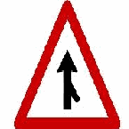

每張卡選「✓ 正確」或「✗ 要改」，要改的寫備註。最下方會彙整，複製給 Claude。
疲倦想睡要到安全處停車休息，等體力恢復才能繼續騎。
數字：—
精神不濟、患有影響駕駛的疾病，或吃了影響反應的藥，都不能駕駛。
數字：—
吐氣酒精濃度達每公升 0.15毫克不得開車；酒後視野變窄；酒精、麻醉劑中毒者不可考照。
數字：0.15毫克
吐氣酒精濃度達每公升 0.25毫克，或吸毒致不能安全駕駛，處3年以下有期徒刑。
數字：0.25毫克、3年以下有期徒刑
機車酒駕第一次，罰鍰最高9萬元、移置保管機車、吊扣駕照 1~2年。
數字：最高9萬元、吊扣1~2年
酒駕且載未滿 12歲兒童，除罰鍰外，還要吊扣駕駛執照。
數字：未滿12歲
10年內酒駕第2次，機車罰9萬元、吊銷駕照3年；汽車罰12萬元。
數字：10年內、機車9萬元、汽車12萬元、吊銷3年
拒絕酒測：罰鍰 18萬元、當場吊銷駕照，並移置保管車輛。
數字：18萬元
酒駕致人傷亡，依刑法處理並吊銷駕照；重傷或死亡者終身不得考領。
數字：—
所有人明知酒駕卻不禁止，罰鍰 15,000～90,000元，並吊扣牌照 2年。
數字：15,000～90,000元、吊扣牌照2年
無照或酒醉駕車致傷亡，加重刑至二分之一；行人慢車擅闖快車道致傷亡，減輕其刑。
數字：二分之一
以蛇行或後輪著地方式駕車肇事，罰鍰並吊銷駕照。
數字：—
迫使他車讓道或任意驟然減速、煞車而肇事，罰鍰並吊銷駕照；迫使讓道者另吊扣牌照 6個月。
數字：吊扣牌照6個月
騎車手持使用手機要罰鍰；停等紅燈也一樣危險；只有停靠路邊可以使用。
數字：—
號牌不可剪裁、扭曲；不懸掛要罰鍰並禁止行駛、吊銷牌照；借用牌照吊銷牌照。
數字：—
拼裝車未核准或報廢車仍上路，禁止行駛，車輛沒入並罰鍰。
數字：—
停在身心障礙專用車位要罰鍰；汽車併排停車罰 1,800～3,000元。
數字：1,800～3,000元
機車不得上人行道；快慢車道分隔的慢車道時速不超過 40公里；慢車道不得左轉、快車道不得右轉。
數字：慢車道40公里
違規停車駕駛不在場可舉發車主；超速、未保持安全距離可用儀器舉發；闖紅燈逕行舉發罰鍰不記點。
數字：—
闖紅燈當場舉發，罰鍰並記點；捷運共用路口闖紅燈罰 3,600～10,800元並記點。
數字：3,600～10,800元
圖中標誌是「匝道會車」。
數字：—

小型輕型機車禁止附載人員；後座乘客應正面跨坐，不得側坐。
數字：—
單一車道內並行，或變換車道、轉彎未打方向燈，都處罰鍰並記違規點數。
數字：—
學校、醫院路段不減速，情節輕微且未危害安全，警察可勸導免舉發。
數字：—
在公路上亂拋物品、煙蒂或火種，是極不道德的危險行為。
數字：—
遠離大型車、避免進入內輪差；進路口減速慢行，注意來車和行人。
數字：—